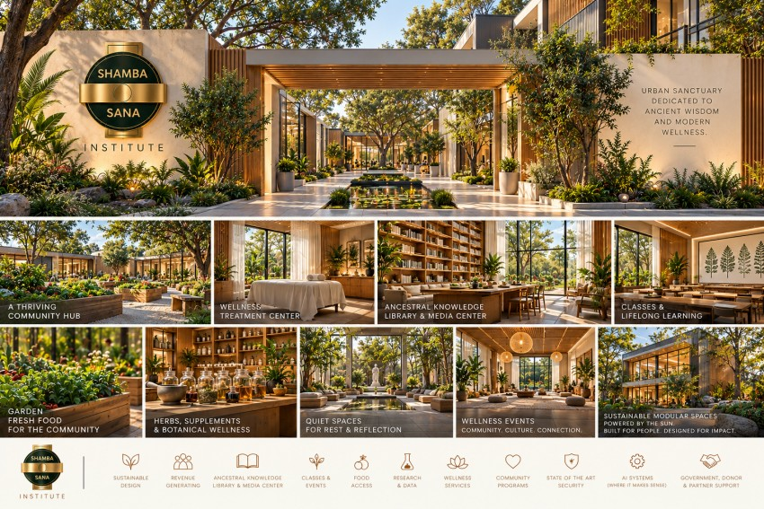

The Institute
Explore ancestral knowledge, integrative wellness, and practical approaches to living well through guided learning and community.
Active learning communityOur dedicated learning destination is taking shape.
Ancient wisdom. Modern wellness. A shared vision for places and practices that nourish body, mind, spirit, and community.

THE SHAMBA SANA SANCTUARY VISIONInspired by the ancient concept of Per Ankh—the House of Life—Shamba Sana imagines a place where healing, learning, nature, and community belong together.
Our long-term vision is a network of welcoming urban sanctuaries: spaces to learn, receive practitioner support, grow food, preserve knowledge, and find restoration.
That work begins through education and the development of remote care, extending the philosophy beyond a physical place.
Learning helps us understand ourselves. Guided care helps us put that knowledge into practice. Begin with the pathway that meets you where you are.
Explore ancestral knowledge, integrative wellness, and practical approaches to living well through guided learning and community.
Active learning communityOur dedicated learning destination is taking shape.
Practitioner-guided wellness connecting laboratory insights, TCM-informed assessment, and personalized recommendations through a developing annual membership.
Pilot in developmentA garden that nourishes. A classroom that opens possibilities. A quiet space to pause. The sanctuary vision brings these experiences together in one welcoming environment.
Honor cultural sources and share traditional knowledge with care and context.
Engage with health science thoughtfully, with qualified human guidance.
Build the knowledge and daily practices to participate in your wellbeing.
Connect personal wellbeing with the people and environments around us.
Shamba Sana grows from Dumisani’s experience in acupuncture, Chinese herbal medicine, nutrition, and education. His work through LifeRx brought prevention, plant-based wellbeing, and patient education together.
That experience informs a vision for Shamba Sana: learning, practitioner services, botanical knowledge, and care connected in a community setting.